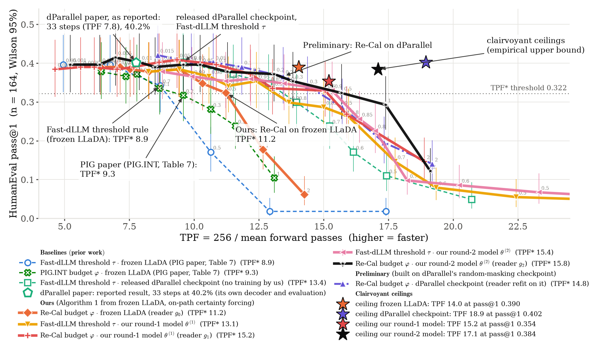

Research update · November 2026
Pick a trusted slow decoder, learn when parallel commits stay on its path, and repair the draft instead of throwing it away.
Quentin Fruytier
The University of Texas at Austin · PIG with Anton Xue, Sanjay Shakkottai and Sujay Sanghavi
The paradigm
1 · Pick a reference
LLaDA: one token per pass, most confident first. Nemotron-Labs-Diffusion: its own AR mode, greedy.
→
2 · Label for free
Every masked slot at every canvas the walk visits gets a label: does the token it would commit now differ from the one the reference ends with?
→
3 · Commit on a budget
Predict p̂ᵢ ≈ P[slot i disagrees] from the one forward pass, and commit slots while Σ p̂ᵢ ≤ φ.
Self-speculation already tracks the AR trajectory, with an exact verifier, so it can only keep a prefix. A learned verifier scores every slot, so it can keep tokens anywhere in the block.
PIG: Fruytier, Xue, Shakkottai, Sanghavi · arXiv 2610.17375
2
Re-Cal · LLaDA-8B-Instruct
pᵢ = g(pass) ≈ P[xᵢ ≠ sequential final]
One small reader on the pass the model already makes. No pairwise entropy matrix, no calibration table: PIG’s middle step is gone.
Rule. Commit the most confident slot, then slots in increasing pᵢ while Σ pᵢ ≤ φ.
Rounds. Fine-tune the model along the path Re-Cal itself decodes, refit the reader, repeat (on-path certainty forcing).
HumanEval · TPF* (higher = faster)
Fast-dLLM threshold, frozen
8.9
PIG.INT, frozen
9.3
Re-Cal, frozen
11.2
Re-Cal after two rounds
15.8
The parallelism ceiling moves too: 14.0 → 17.1.
164 problems, blocks of 32 · TPF* = fastest setting with pass@1 ≥ 0.322 · the model’s own sequential pass@1 stays 0.396
3
New direction 1 · Nemotron-Labs-Diffusion-3B self-speculation
1
Quadratic self-speculation verifies the draft and, in the same forward, drafts a fresh block after every possible accept length c = 0…31: j + 1 tokens per forward, at about 1,050 input positions.
2
A small adapter on the drafter’s hidden states predicts where verification will stop: S(c) = P[accept length ≥ c].
3
Keep only C blocks, chosen each step to maximise the expected tokens per forward.
| decoder | positions | HumanEval | GSM8K-500 |
|---|---|---|---|
| linear SS (release) | 2 × 32 | 3.22 | 4.12 |
| quadratic SS, all 32 | 1,047 | 4.58 | 5.90 |
| pruned, C = 5 | 187 | 4.27 | 5.53 |
| pruned, C = 3 | 121 | 3.98 | 5.16 |
Tokens per forward (TPF); every forward counted, recovery passes included
C = 5 is lossless on both sets and gains +32% / +34% TPF: 76–85% of the quadratic gain at 18% of its width.
Strict verification: every committed token is the AR’s · paired 95% accuracy intervals vs linear SS contain 0
4
New direction 2 · editing the draft
Step 1 · accept any subset
Hopper
and
Hopper
are
fast
Keep every slot that agrees with the reference, including the tail past the first wrong one.
→
Step 2 · re-mask the rest, forward again
Hopper
and
Blackwell
are
fast
Only the rejected slot is regenerated, now conditioned on the kept tail on both sides.
The subset is the verified prefix; the tail is thrown away and redrafted.
The subset may sit past the first rejection; the rest stays masked.
Any subset kept, the rest regenerated in the forward that verifies: the tail survives.
Illustrative example · the Nemotron-Labs-Diffusion paper names non-prefix commits as an open direction
5
The proposal
MODE 1
Exact, one token per forward.
MODE 2
Drafts a whole block in parallel.
MODE 3
Diffusion drafts, AR accepts the prefix.
MODE 4 · NEW
Reads the drafted block fully visible; per slot, keep or replace.
A per-token-gated LoRA (r = 64, about 99M parameters), never merged: the three shipped modes are unchanged, checked bit for bit.
In the same forward, the AR stream commits the exact prefix and the edited tail becomes the next draft.
The target is the AR greedy trajectory, read off the lossless loop: prompts only, no ground truth.
Status. Stage 1 is training offline on 2,000 prompts from Nemotron’s SFT sets; next, next-draft acceptance on held-out states, then the decode loop.
Nemotron-Labs-Diffusion: Fu et al. 2026, arXiv 2607.05722 (AR, diffusion and self-speculation in one network)
6
Backup · Re-Cal on LLaDA-8B-Instruct

Fast-dLLM, frozen
8.9
Re-Cal, frozen
11.2
Re-Cal, round 2
15.8
Stars: clairvoyant ceilings, 14.0 → 15.2 → 17.1.
TPF* · 164 problems, BL = 32, Wilson 95% bars · dParallel lanes are its released checkpoint, decoded in our harness
B1
Backup · where the remaining speed is
14.0
Clairvoyant ceiling: commit every slot whose argmax already equals its final sequential token.
0.945
Reader AUC on that path; it commits 77–81% of the committable slots per canvas.
36 vs 34%
A top-10 re-ranker barely beats the runner-up: the rest is not readable from one pass.
Most training canvases lie off any path a decoder takes, so the model hedges between outputs, the discrete version of crossing paths.
One pairing per prompt, the output Re-Cal reaches at its largest safe budget, and training only along the path it takes: a reflow round.
Frozen LLaDA-8B-Instruct, HumanEval · sequential pass@1 0.396; ceiling pass@1 0.390
B2
Backup · the expected-value candidate set
(N, K) = (j + 1, 2) if j < c₁ miss: plus a draft-only forward
(N, K) = (cᵢ + 1, 1) if cᵢ ≤ j < cᵢ₊₁ continue from the block at cᵢ
𝒞* = argmax over |𝒞| = C of E[N] / E[K], E[K] = 2 − S(c₁)
j = accept length, modelled by the adapter’s survival S; recomputed every step from that step’s draft.
The exact optimum (chain dynamic program plus Dinkelbach) is within 0.04 TPF of greedy.
At equal C it beats tuned offsets and survival levels by 4–6% TPF, in all eight cells.
One candidate misses on 26–29% of steps; the recovery forwards cancel the gain.
Nemotron-Labs-Diffusion-3B · HumanEval and GSM8K-500 · strict verification
B3
Backup · fixing C = 1: anchored candidates
draft
s₁
s₂
s₃
s₄
s₅
s₆
s₇
s₈
commit (j = 5)
s₁
s₂
s₃
s₄
s₅
a₆
block at c₁ = 3
b₄
b₅
b₆
b₇
b₈
Block 3 was drafted in the same forward from s₁…s₃. Its guesses past a₆ become the next draft, 3 tokens stale instead of 6.
Always commit j + 1. Every AR-verified token is kept whatever the candidates are.
A miss costs no forward. A block at c = 0 is always drafted (Packed-SS); if j < c₁ it takes over.
Choose the anchor. c₁ = argmax c · S(c): the expected freshness gained.
Runs in progress.
Packed-SS: Chen and Cai, arXiv 2610.33379 · strict verification, so the output is the AR greedy walk
B4
Backup · training the edit mode
L(θ) = E[ − Σℓ wℓ log pθℓ(xℓ | z, c) ]
wℓ = exp(−dℓ / γ), dℓ = distance from the commit point
z: the drafted block, fully visible. c: the committed context (cached by the frozen base). x: the AR greedy tokens at the block’s positions. Cross-entropy on drafted slots only.
At the optimum, keep-probability κℓ = pℓ(zℓ) = 1 − P[slot disagrees | features]: Re-Cal’s calibrated reader, plus an edit.
States. A committed prefix of the AR walk, a drafted block after it, the walk’s tokens there: from the lossless anchored loop, plus loop-free blocks of 16, 32 or 64 slots.
Data. 2,000 prompts (600 math, 600 chat, 800 code) from Nemotron’s SFT sets; 100 held out.
Model. LoRA r = 64 on attention and MLP of all 26 layers; base and LM head frozen; AdamW 1e-4, two epochs.
Borrowed from published DLM editors: own-draft corruption, loss on drafted slots only. New: the label-free AR target, the gated fourth mode, repair inside the lossless verify forward.
Recipe from ProSeCo, ME-DLM, CDLM, SCOPE, PRISM, DEdit and others · γ swept over 8, 15, ∞
B5